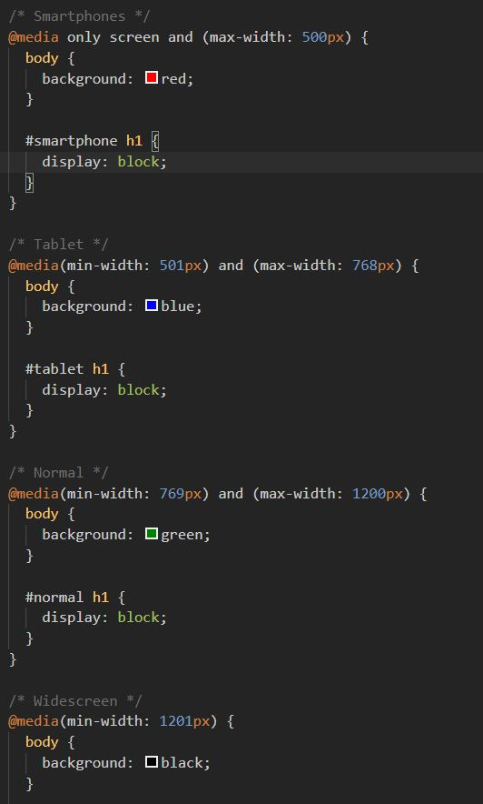
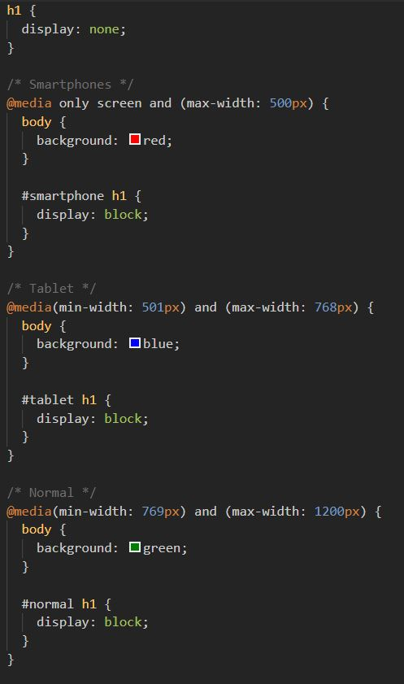
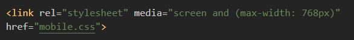

Media Queries Notes
Notes:
Sandbox
- "Mobile-First" Design
- Design the page/app for use on a phone first
- This many require that less information is presented.
- "Mobile-First" designing. - Design so it looks good on a phone before any other device.
- Media Query Code and Layout
- Media queries can be set for both height and/or width.
- Smartphone typically under 500px width
- In "Mobile-First" designing - set-up the design so it looks good on a mobile device first and then add min-width.
only screen and (max-width: 500px)means the width only applies to screens (a media type).- Other options could be voice (speech) or print and speech. (Default is ALL).

- Disable and enable h1 headers to correspond with each media query.
- Notice the h1 is disabled initially nad the as the media query is realized the h1 on corresponding to the query is displayed.
- This trick could potentially be used to display different themes based on size of the screen.
- Practical application for this is floating divs in larger screens and stacking divs on smaller screens.
- You may create style sheets for each type of media query.
- smarthphone.css
- tablet.css
- laptop.css
- For example....
- In the above case, the stylesheet will only be used / active when the screen size is 768px or less.
- Must use the media attribute in the link.

